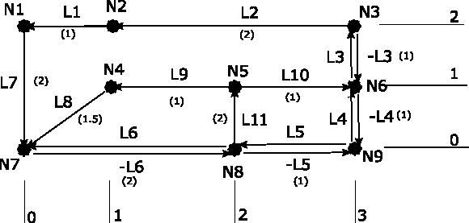

P4:
Network Analysis
Objectives
By the end of this practical
you should be able to:
- create and retrieve
information about objects based on their
spatial
relations in networks;
- perform specific network
analysis tasks; and
- write simple PL/SQL code to
execute SQL-based procedures and
routines.
Overview
This practical will introduce you to the basics of spatial analysis of networks in SQL. We will use the spatial capabilities of Oracle 10g DBMS. Basic spatial operations in networks will be covered.
Spatial networks are sets of nodes connected by edges, such as might be used to represent cities connected by roads or railways. In network models, the Euclidean distance between nodes does not have to equal the network distance. Edges (links) in the network may be directed or undirected. In addition to connectivity, networks in Oracle Spatial have geometric information associated with them (for instance, geographic coordinates of the nodes).
Some of the excercises will use the Procedural Language (PL) extension of the SQL language from Oracle. PL enables you to run more complex, structured programs with conditions, loops, etc. The basic structure of a PL/SQL block is:DECLARE
/*optional */
/*this is a comment */
BEGIN
/*core section of the block, compulsory*/
EXCEPTION
/*Error handling,... Optional*/
END;
.
run; /* this runs the program*/
/*optional */
/*this is a comment */
BEGIN
/*core section of the block, compulsory*/
EXCEPTION
/*Error handling,... Optional*/
END;
.
run; /* this runs the program*/
Exercise P4.1: Network data
entry
Spatial networks are sets of nodes connected by edges, such as cities
connected by roads or railways. In network models, the Euclidean
distance between nodes is not necessarily equal to the network
distance. In this exercise, we will create a simple
network, fill it with data, and perform some basic analysis.
- Login to the course database server (in Oracle*SQL instant client). Log in to the server using the same connection string as in previous practicals.
- Network
creation: There
are several ways to create a network in Oracle. We will use the
automatic way, which lets Oracle create all the necessary table
structures with the procedure SDO_NET.CREATE_SDO_NETWORK. The
parameters to this procedure provide the name of the network
("tutorial"), the number of
hierarchical levels (1), whether the graph is directed (true), and
whether costs
are assigned to nodes (false). Use the following PL procedure to create
the
empty tutorial network:
exec SDO_NET.CREATE_SDO_NETWORK ('tutorial',1,true,false)This automated procedure also creates all the necessary entries in the network metadata tables. It does not, however, create entries in the spatial metadata tables in case of a spatial network.
- Get an
overview of the
available data structures:
Verify that
the following tables are present and describe their
structure:
TUTORIAL_NODE$, TUTORIAL_LINK$, TUTORIAL_PATH$
and TUTORIAL_PLINK$. Detailed description of some of the
columns can be found by referring to the lecture notes and to other
documentation (e.g., Kothuri et al. 2004).
The tables
containing "paths" and "plinks" will not be used for the timebeing, so
can be ignored.
Validate the network created through the following command:
SELECT SDO_NET.VALIDATE_NETWORK ('tutorial') FROM DUAL;
The only errors should be those indication missing spatial ("geom")
metadata. Note that "DUAL" is just a dummy table necessary to make the
SELECT statement run.
- Input of network data: We will fill the network "tutorial" with the network provided in the figure on the right. For convenience, where two links connect a pair of nodes in opposite directions, one link is preceded with a negative sign (e.g., L6 connects N8 to N7; -L6 connects N7 to N8). The costs of the links are shown in the figure (all links in opposite directions connecting the same nodes have equal costs). No costs are assigned to nodes. The (non-geographical) coordinates of the nodes are indicated on the margins of the figure.
- Populate
the node table: Use the
following template to populate the
table with node data (note that the SRID parameter is NULL):
INSERT INTO tutorial_node$ (node_id, node_name, geometry) VALUES (1,'N1',SDO_GEOMETRY(2001,NULL, SDO_POINT_TYPE(0,2,NULL),NULL,NULL)Remember to execute the COMMIT command at the end of all major operations to save your data. Because these commands are relatively repetitive and you are almost certain to make a mistake or two initiall, it is essential to construct your commands in a text editor (like notepad) using cut-and-paste. Then execute your commands using the "start" command (as in previous weeks). In case your get stuck and want to completely restart the creation of the network, drop the network with the command:
);exec SDO_NET.DROP_NETWORK('NETWORK_NAME');before trying to re-create it again. Sometimes it is necessary to also issue a "PURGE RECYCLEBIN" command before recreating the network.
- Populate
the link table: Now populate
the
tutorial_link$ table with link data. You need to enter data for the
columns link_id, link_name,
start_node_id, end_node_id, cost, and geometry. Inputing links follows
the template below. Note that the direction
of
edges is significant (e.g., an edge from N2 to N1 is
different from an edge from N1 to N2):
INSERT INTO tutorial_link$ (link_id, link_name, start_node_id, end_node_id, cost, geometry) VALUES
(1,'L1',2,1,1,
SDO_GEOMETRY (2002,NULL,NULL,
SDO_ELEM_INFO_ARRAY (1,2,1), -- Straight line string element info
SDO_ORDINATE_ARRAY (1,2,0,2) -- Coodinates for link
)); - Verification
of the network: Oracle offers
several commands to verify
the entry of the data in your network. You can retrieve the information
about the nodes, links, non-connected nodes and invalid
links.
SELECT SDO_NET.GET_NO_OF_NODES('network_name') FROM DUAL;Other commands include .GET_NO_OF_LINKS(network_name), .GET_ISOLATED_NODES(network_name), .GET_INVALID_LINKS(network_name), .GET_LINK_DIRECTION(network_name,link_id). Verify that your network has 9 nodes and 15 links, with no isolated nodes or invalid links.
- Finding
information about individual elements of the network:
Finally, it is possible to retrieve basic topological information about
the
elements of the network as such. This is important information for
verifying that the network connectivity is correct. The basic measures
are
node degree (total number of links incident with a node). Node
in/out-degree is the number of incoming and outgoing links from a
specific node respectively (therefore for any node n,
degree(n)=in_degree(n)+out_degree(n)). The basic commands all follow
the same
consistent pattern:
SELECT SDO_NET.GET_NODE_DEGREE('network_name', node_id) FROM DUAL;The other commands are: .GET_NODE_IN_DEGREE, .GET_NODE_OUT_DEGREE, .GET_IN_LINKS, .GET_OUT_LINKS. Build an SQL statement to list all the nodes in numerical order along with their degree, in-degree, and out-degree. Make sure your output looks exactly like the following table. (Note: you can use the SQL*Plus command "COLUMN node_name FORMAT a9" to reformat the display of the node_name column so it fits neatly on your screen.)
NODE_NAME
DEGREE
IN_DEGREE
OUT_DEGREE
--------------
-------------- -------------- -------------- N1
2
1
1
N2
2
1
1
N3
3
1
2
N4
2
1
1
N5
3
1
2
N6
5
3
2
N7
4
3
1
N8
5
2
3
N9
4
2
2